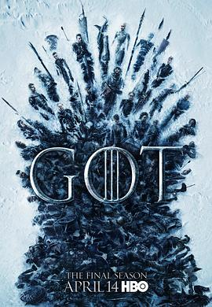

权力的游戏 第八季 / Game of Thrones Season 8
又名：冰与火之歌 第八季 / 权游8 / Game of Thrones: The Final Season
作品信息
| 导演 | 米格尔·萨普什尼克 / 大卫·努特尔 / 戴维·贝尼奥夫 / D·B·威斯 |
| 编剧 | 戴维·贝尼奥夫 / D·B·威斯 / 乔治·马丁 / 戴夫·希尔 / 布莱恩·考格曼 |
| 主演 | 艾米莉亚·克拉克 / 基特·哈灵顿 / 彼特·丁拉基 / 苏菲·特纳 / 麦茜·威廉姆斯 / 琳娜·海蒂 / 伊萨克·亨普斯特德-怀特 / 尼古拉·科斯特-瓦尔道 / 约翰·布莱德利 / 阿尔菲·艾伦 / 皮鲁·埃斯贝克 / 格温多兰·克里斯蒂 / 利亚姆·坎宁安 / 娜塔莉·伊曼纽尔 / 康勒斯·希尔 / 罗伊·麦克凯恩 / 杰罗姆·弗林 / 克里斯托弗·海维尤 / 约瑟夫·戴浦西 / 雅各布·安德森 / 伊恩·格雷 / 安东·莱瑟 / 理查德·多默 / 杰玛·韦兰 / 本·克朗普顿 / 哈夫索尔·尤利尔斯·比昂森 / 丹尼尔·波特曼 / 鲁珀特·范西塔特 / 贝拉·拉姆齐 |
| 类型 | 剧情 / 奇幻 / 冒险 |
| 制片国家/地区 | 美国 |
| 语言 | 英语 |
| 首播 | 2019-04-14(美国) |
| 季数 | 8 |
| 集数 | 6 |
| 单集片长 | 60分钟(E1-E2) / 80分钟(E3-E6) |
| IMDb | tt5924366 |
最后一次看到是 2026-08-12T21:12:02+08:00 · 豆瓣原页